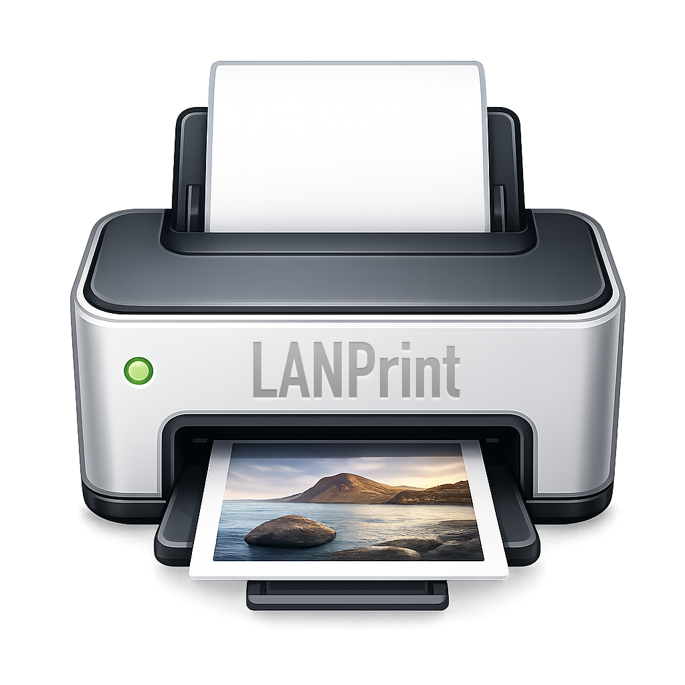

lanPrint 是一款极简的跨平台打印网关。无论你在办公室还是在家中，只需一键共享，即可将本地打印机转化为全局可用的智能设备。
采用 Go 语言开发，单文件运行，不产生垃圾，不占用系统资源。一键安装为系统服务。
深度适配 Windows 7-11, macOS 和主流 Linux 发行版。支持所有主流打印机型号。
内置 SHA256 密码验证，支持细粒度的权限控制。即使在公网环境下也能放心使用。
独有的“原生降级”技术，在 Windows 上无需安装任何 PDF 阅读器即可完成高质量打印。